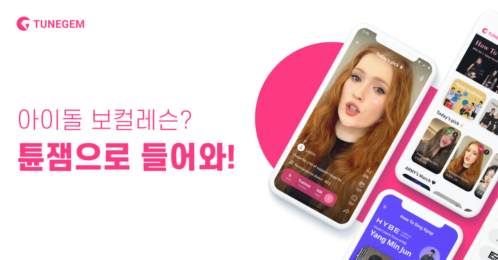

Experience · 2015 — 현재
경력
2026.01 — 현재NOW장례 IT·소프트웨어 서비스업
가온프라임
그로스마케터
화환 판매 서비스 에어플라워, 캐릭터 채팅 서비스 NoahChat·Himitsuchat, AI 생성 서비스 Nordy의 그로스 마케팅을 맡아 각 서비스의 유입부터 결제까지 사용자 여정을 개선하고 있습니다. 측정 이벤트를 직접 설계해 병목을 찾고, 제품 개선과 광고 운영으로 연결합니다.
Services
담당 서비스
- Nordy.ai AI 이미지·영상 생성
- Himitsuchat AI 캐릭터 챗
- NoahChat 캐릭터 채팅
- 에어플라워 화환 판매
What I do
하는 일
측정 설계 · 데이터 품질GA4 · GTM · Mixpanel · BigQuery
GA4와 Google Tag Manager로 가입부터 결제까지의 전환 퍼널을 설계하고, SPA 페이지뷰 중복 제거와 사용자 속성 체계를 정비했습니다. Mixpanel 세션 어트리뷰션으로 유입 채널 데이터의 정합성을 확보했습니다.
활성 사용자를 몰입 단계로 나누는 이벤트와 무료 챗 소진(quota_reached) 이벤트를 설계해 결제 직전 단계까지 측정할 수 있게 했고, 운영 DB·GA4·Mixpanel 가입 수를 교차 검증해 수집 누락을 찾아 매일 자동 점검하게 했습니다.
활성 사용자 분류와 무료 챗 소진 이벤트 설계 →가입 데이터 수집 오류 진단과 모니터링 →제품 분석 이벤트와 결제 데이터 개선 설계 →
그로스 분석 · 제품 개선퍼널 병목 → 개선 기획
퍼널에서 방문자의 약 22%만 첫 채팅을 시작하는 병목을 찾아 추천 답변 버튼과 캐릭터챗/스토리챗 분리를 기획했고, 출시 1주 만에 하루 채팅 수가 약 14배로 늘었습니다.
생성 횟수·크레딧 사용량별 첫 구매율을 분석해 구매 가능성이 높은 이용 집단을 찾고, 행동 기반 결제 안내 실험을 기획했습니다.
리텐션 · CRM재방문과 라이프사이클
리텐션을 첫 대화 시각 기준·회원 한정·미완료 코호트 제외 방식으로 다시 정의하고, 첫 대화 경험을 개선해 회원 D1 재대화율을 6.8%에서 32.8%로 끌어올렸습니다.
무료 크레딧 소진 후 재이용 행동을 분석하고, 출시 공지부터 휴면 복귀까지 이어지는 CRM 이메일 자동화와 크레딧 어뷰징 탐지 정책을 설계했습니다.
리텐션 지표 재정의와 첫 대화 경험 개선 →무료 크레딧 소진과 재이용 행동 분석 →CRM 이메일 자동화와 개인화 타깃팅 기획 →무료 크레딧 어뷰징 탐지 정책과 과거 데이터 검증 →
퍼포먼스 광고Google Ads · X · Meta
X(트위터) 대만 타깃 광고로 신규 사용자 약 2,900명을 1명당 약 ₩320에 모았고, 연동되지 않던 X 광고비를 대시보드에 붙여 매체별 비용과 ROAS를 같은 기준으로 비교하게 했습니다.
Google Ads 검색광고를 태국·대만·멕시코·베트남 4개국에서 운영하며 가입 CPA를 약 1,600~2,600원 수준으로 관리했고, 국가별 퍼널 분석으로 해외 우선 검증 시장 5개국과 운영안을 정했습니다. Meta 전환 API 세팅도 진행했습니다.
대시보드 · 데이터 인프라PostgreSQL · BigQuery · Docker
운영 DB·GA4·Google Ads·Stripe를 하루 두 번 자동 수집하는 Himitsuchat 그로스 대시보드를 혼자 기획·구축하고, 20회 넘게 배포하며 운영하고 있습니다.
잘못 재던 매출·광고·결제 지표의 기준을 바로잡고, 서비스 장애를 원인까지 추적해 복구한 뒤 알림과 배포 차단 장치로 재발을 막았습니다. 구현은 AI 코딩 에이전트에 맡기고 판단과 승인은 직접 하는 방식으로 일합니다.
그로스 대시보드 설계 · 구축 · 운영 →그로스 데이터 분석과 지표 기준 바로잡기 →장애 대응과 운영 안정화 →AI 코딩 에이전트와 일하는 방식 →
검색 최적화Technical SEO · AEO/GEO
구조화 데이터와 색인 구조를 개선하고, LLM 답변에서 브랜드가 언급되는 비율을 정량 측정해 경쟁사와의 격차를 분석했습니다.
검색 클릭이 브랜드 검색에 쏠린 구조를 진단해 비브랜드 랜딩페이지 개선 우선순위를 정하고, 사이트맵·대표 URL·다국어 설정을 주간 점검 체계로 만들었습니다.
생성형 AI 콘텐츠ComfyUI · NovelAI · Seedance · Kling · Veo
생성형 AI 도구로 마케팅용 영상과 이미지를 프롬프트 설계부터 CapCut 편집까지 직접 만들고, Nordy의 15초 광고 스토리와 콘셉트 보드를 기획했습니다.
1만 장이 넘는 이미지 실험으로 서비스용 그림체 5개를 정하고, ComfyUI 후처리를 배치로 자동화했습니다.
Projects · 2026.08 — 10
프로젝트
AI 이미지·영상 생성 서비스
AI 캐릭터챗 서비스
2024.04 — 2025.12SI·서비스, 광고 대행업
리노커뮤니케이션즈
SK브로드밴드 웹 운영 대리 / PL
- 2025.04 — 12
- 리노커뮤니케이션즈 · SK브로드밴드 운영 대리 / PL
- 2024.04 — 25.02
- (주)유컴패니온 그룹 · SK브로드밴드 운영 TFT 선임 / PL
SK브로드밴드 웹 운영팀에서 GA4 기반 데이터 분석을 맡았습니다.
업무 역량과 고객 커뮤니케이션을 인정받아 3개월 만에 PL(프로젝트 리더)로 발탁되었습니다.
2025년 4월 팀 전체가 유컴패니온 그룹에서 리노커뮤니케이션즈로 함께 옮겼습니다.
What I did
업무
- SK브로드밴드의 B world, B directshop, Enterprise 등 3개 사이트 운영을 담당했습니다.
- GA4와 Google Tag Manager로 버튼 클릭부터 상품 가입까지의 고객 여정을 분석하고, 퍼널 데이터를 근거로 사용자 접근성을 개선했습니다.
- Google Search Console로 주요 유입 페이지의 SEO를 진단하고 개선 방안을 제안했습니다.
- GA4 탐색 리포트 150건 이상을 작성하고 BigQuery로 핵심 지표를 추출·관리하며 사용자 데이터를 꾸준히 모니터링했습니다.
- 마케팅 성과 분석으로 주요 유입·가입 플랫폼을 찾아내고, 관련 기술적·이론적 인사이트를 제공했습니다.
- 고객사가 데이터를 어떻게 볼지, 어떤 지표를 확인할지부터 GA4와 Looker Studio 기본 기능까지 교육했습니다.
Projects
프로젝트
2020.11 — 2023.10K-POP 보컬 분석 앱 서비스
케이팝팩토리
서비스 운영 및 마케팅 팀장 · 창립 멤버
스타트업 창립 멤버로 보컬 분석 앱 TUNEGEM의 초기 기획부터 런칭, 운영, 마케팅을 맡았습니다. TUNEGEM은 “K-POP 보컬의 모든 것!”을 슬로건으로 글로벌 10~20대에게 보컬 분석 기반 레슨과 오디션을 제공하는 플랫폼입니다.

What I did
업무
- 앱의 기획·운영·마케팅 전반을 맡아 사용자 경험 개선과 시장 확장 전략을 세우고 실행했습니다.
- Google Ads, Apple Search Ads 같은 성과형 광고와 YouTube, Instagram, Facebook 채널로 글로벌 10~20대 타깃에 맞춘 콘텐츠를 만들고 마케팅했습니다.
- 앱 내 사용자 행동 데이터를 수집·분석해 UI/UX 개선과 퍼널 최적화로 접근성과 전환율을 높였습니다.
2017.09 — 2020.04여행업, K-POP 공연업
SM Culture
& Contents
글로벌패키지 대리
SM엔터테인먼트 아티스트의 콘서트와 결합한 인·아웃바운드 관광 패키지의 기획과 총괄 운영을 맡았고, 업무 능력을 인정받아 1년 6개월 만에 대리로 진급했습니다.
What I did
업무
- 콘서트 티켓에 meet & greet·팬미팅 같은 이벤트, 식음료, 호텔, 버스를 묶은 관광 패키지를 판매했습니다.
- 모든 패키지를 총괄 운영했습니다. 국내 상품은 식음료·버스·가이드를, 해외 상품은 호텔·버스를 수배했습니다.
- 콘서트 주관사 드림메이커 엔터테인먼트, 팬클럽 담당 부서, MD 판매 부서와 긴밀히 협의하며 K-POP 업무 전반을 깊이 이해하게 되었습니다.
- 1회 4,000명이 넘는 고객 데이터를 다루며 예약과 이벤트에 필요한 데이터 전처리를 진행했습니다.
- Magento 오픈소스로 폐쇄몰을 운영하며 K-POP MD를 판매했습니다.
Packages
운영한 패키지
| 공연 | 날짜 | 인원 |
|---|---|---|
| SUPER SHOW 7 | 2017.12.15–17 | 850 |
| THE MAGIC OF CHRISTMAS TIME | 2017.12.23–24 | 280 |
| TVXQ! CONCERT #welcome CIRCLE | 2018.05.05–06 | 1,100 |
| EXO PLANET #4 – THE ElyXiOn [dot] | 2018.07.13–15 | 3,500 |
| Red Velvet 2nd Concert – REDMARE | 2018.08.04–05 | 300 |
| SHINee – THE SHINING | 2018.09.01–02 | 1,300 |
| ‘s… TAEYEON CONCERT | 2018.10.20–21 | 300 |
| TVXQ! The Truth of Love | 2018.12.25–26 | 900 |
| NCT 127 1st Tour NEO CITY : SEOUL – The Origin | 2019.01.26–27 | 800 |
| TVXQ! CONCERT #with CIRCLE | 2019.03.09–10 | 1,200 |
| TAEMIN 2ND CONCERT 1001101 | 2019.03.15–16 | 600 |
| ‘s…one TAEYEON CONCERT | 2019.03.23–24 | 120 |
| SUPER JUNIOR-D&E CONCERT | 2019.04.13–14 | 800 |
| XIUMIN FANMEETING XIUWEET TIME | 2019.05.03–04 | 60 |
| 2019 KYUHYUN FANMEETING 다시, 만나는 오늘. | 2019.05.18–19 | 60 |
| EXO PLANET #5 – EXplOration | 2019.07.19–28 | 4,000 |
| SUPER SHOW 8 in SEOUL | 2019.10.12–13 | 750 |
| NCT DREAM THE DREAM SHOW | 2019.11.16–17 | 700 |
| TAEYEON FANMEETING Inside TAEYEON | 2019.11.22–23 | 100 |
| Red Velvet 3rd Concert – La Rouge | 2019.11.23–24 | 150 |
| 2019 NCT 127 FANMEETING WINTER CTZEN | 2019.12.20–21 | 200 |
| TVXQ! 2019 FANMEETING The Starry Night | 2019.12.27–28 | 350 |
| 합계 | 18,420 |
| 공연 | 날짜 | 인원 |
|---|---|---|
| EXO PLANET #4 in TAIPEI | 2018.02.10–11 | 30 |
| SHINee WORLD THE BEST 2018 in JAPAN | 2018.02.26–27 | 120 |
| SUPER SHOW 7 in TAIPEI | 2018.03.31–04.01 | 30 |
| EXO PLANET #4 in MANILA | 2018.04.27–28 | 30 |
| EXO PLANET #4 in HONG KONG | 2018.06.02–03 | 30 |
| EXO-CBX “MAGICAL CIRCUS” TOUR 2018 in JAPAN | 2018.06.07–08 | 100 |
| EXO PLANET #4 [dot] in MACAU | 2018.08.10–11 | 60 |
| SUPER JUNIOR-D&E CONCERT in TAIPEI | 2019.06.22–23 | 60 |
| SUPER JUNIOR-D&E CONCERT in HONG KONG | 2019.06.28–29 | 30 |
| TVXQ! CONCERT #with CIRCLE in HONG KONG | 2019.07.19–20 | 100 |
| EXO PLANET #5 in HONG KONG | 2019.08.10–11 | 60 |
| EXO PLANET #5 in MANILA | 2019.08.23–24 | 30 |
| TVXQ! CONCERT #with CIRCLE in TAIPEI | 2019.09.06–07 | 200 |
| SUPER SHOW 8 in MANILA | 2019.12.14–15 | 30 |
| SUPER SHOW 8 in MACAU | 2020.01.18–19 | 30 |
| 합계 | 940 |
기타 행사 기획 및 운영
- 7th GAON CHART MUSIC AWARDS 2017
- PCA생명 2017 Summer Contest Incentive Trip in Guam
- PUBG PARTNERS PARTY 2018
- SMTOWN FRIENDS in PYEONGCHANG 2018
2015.03 — 2017.03관광 안내
서울시관광협회
움직이는 관광안내 부팀장
서울을 찾은 관광객에게 직접 다가가는 관광 안내원으로 일했습니다. 소통 능력과 언어 능력을 인정받아 1년 만에 부팀장으로 진급했습니다.